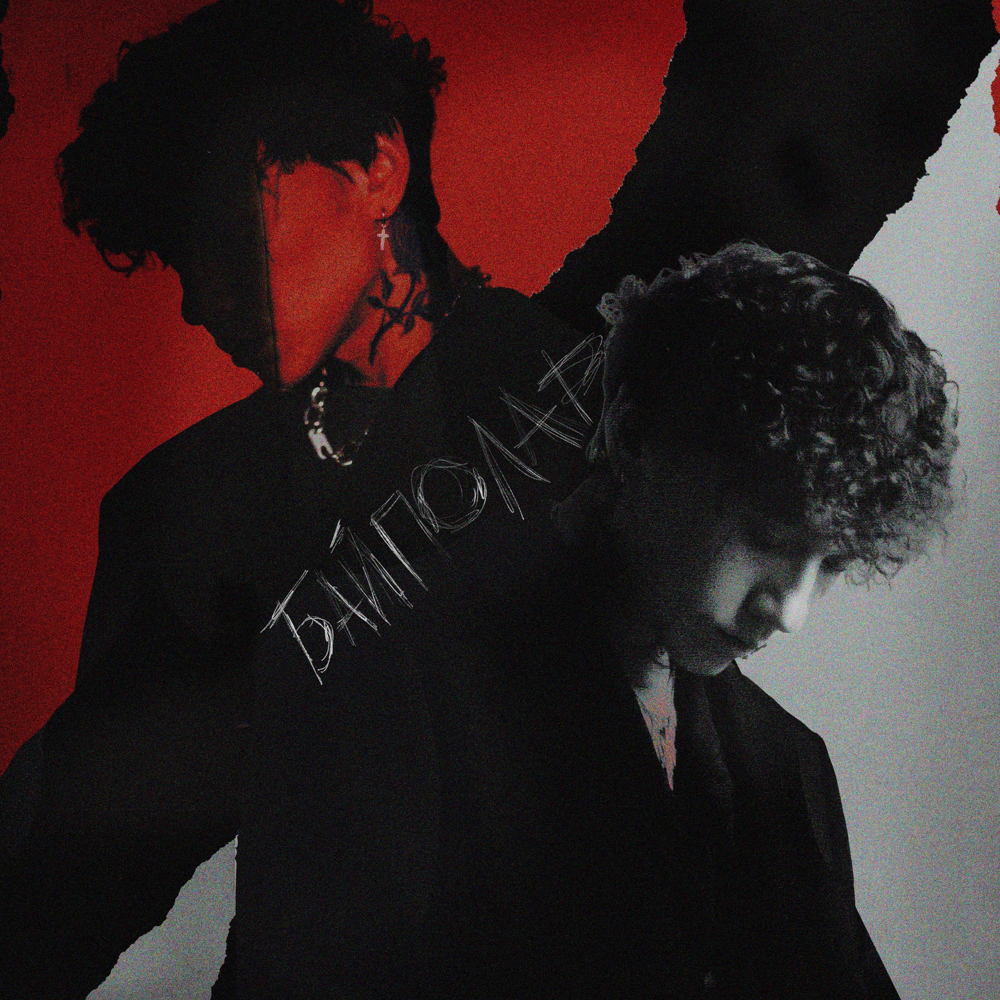

Поп

Альбом Я ЛЮБЛЮ ТЕБЯ (RAUF & FAIK) набрал более 244 миллиона прослушиваний. Я ЛЮБЛЮ ТЕБЯ занимает 3-е место по прослушиваниям в Spotify среди альбомов русскоязычных исполнителей и 11-е место в VK Music в списке самых прослушиваемых официальных плейлистов. Рекомендуется для прослушивания.

Альбом СПИСОК ТВОИХ МЫСЛЕЙ (JONY) набрал более 229 миллиона прослушиваний. СПИСОК ТВОИХ МЫСЛЕЙ занимает 2-е место по прослушиваниям в Spotify среди альбомов русскоязычных исполнителей и 55-е место в VK Music в списке самых прослушиваемых официальных плейлистов.

Альбом Байполар (Три дня дождя) набрал набрал более 9 миллиона прослушиваний в VK Music. Также у группы имеются менее известные альбомы, такие как "Когда ты откроеш глаза", "Любовь, аддикция, марафоны", "Пепел". Все альбомы рекомендуются к прослушиванию, если вам нравится жанр рок. Также у группы есть много коллабораций с группами с такиже направлением.